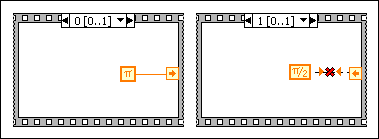

You can assign a value to the sequence local terminal of a Stacked Sequence structure in only one frame, but you can use the value in all subsequent frames. On the left side of the following example, the value pi is assigned to the sequence local terminal in frame 0. If you try to assign another value to this same sequence local terminal in frame 1, you create a broken wire, as shown on the right side of the example.
